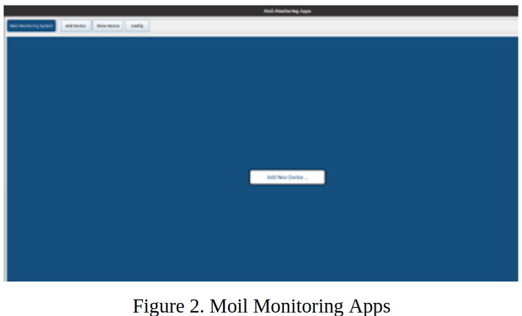
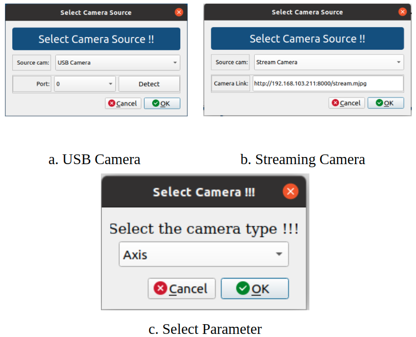
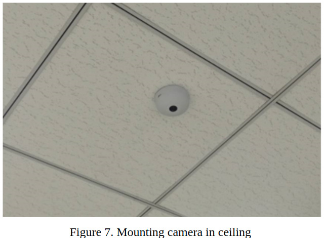
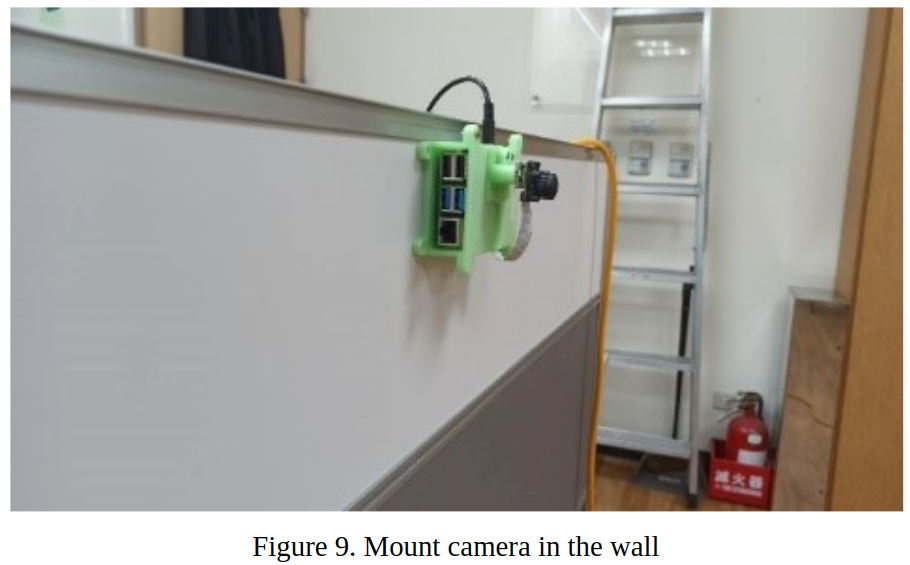
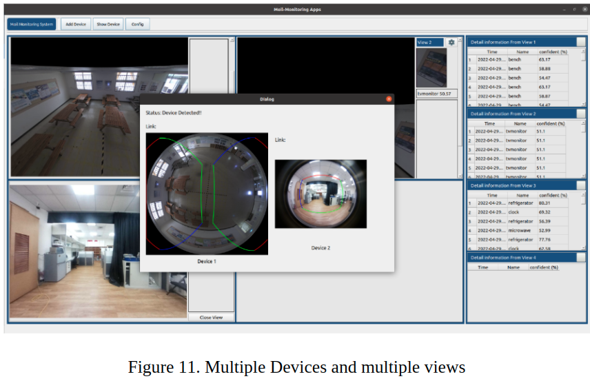

Moil Monitoring System
Kamera adalah perangkat yang dapat menangkap gambar atau video. Salah satu kegunaan kamera adalah dapat digunakan sebagai pemantau suatu lingkungan yang disebut dengan kamera pengintai. Kini banyak kamera yang dipasang di kantor pemerintahan, kantor bisnis bahkan sekolah untuk membantu meningkatkan tingkat keselamatan masyarakat.
Kamera pengintai biasanya diletakkan di sudut ruangan untuk melihat satu sisi karena kamera memiliki sudut pandang yang kecil. Karena kekurangan tersebut, kamera berkembang menjadi kamera pan till zoom (PTZ), yang dapat bergerak ke kiri dan kanan, bawah, dan atas serta zooming yang memungkinkan pengguna untuk melihat area lain dengan mudah. Dan kini kamera fisheye sudah mulai banyak digunakan untuk menggantikan kedua jenis kamera tersebut. Kamera fisheye adalah kamera yang memiliki jangkauan sudut pandang lebar yang berbeda dengan kamera biasa yang memiliki tampilan kecil.
Meski memiliki pandangan yang luas, kamera fisheye memiliki distorsi gambar yang tinggi, seperti objek yang terlihat melengkung atau objek yang tidak jelas sehingga gambarnya tidak terlalu bagus. jika masalah ini dapat diselesaikan maka akan menghasilkan gambar yang sama dengan kamera lainnya dan juga dapat menjangkau area yang lebih luas daripada kamera PTZ.

Metode usulan
Sesi ini akan menjelaskan secara detail tentang library yang digunakan.
a. Moil Monitoring Application
Kami (Laboratorium Moil) mencoba mengembangkan kamera fisheye untuk mengatasi masalah distorsi kamera pada gambar fisheye dan membuatnya lebih sederhana dan dapat menggantikan kamera PTZ. kami membuat aplikasi yang dapat mengolah kamera fisheye dan menjadikannya sebagai kamera pemantau. Aplikasi ini dapat memaksimalkan FoV dari kamera fisheye sehingga dapat menggantikan kamera PTZ.
Aplikasi ini dapat memproses kamera USB dan kamera streaming secara bersamaan. Sebelum menjalankan aplikasi ini, kamera akan dikalibrasi terlebih dahulu oleh lab moil kemudian akan didapatkan parameter yang dapat digunakan oleh masing-masing kamera dengan tipe model yang sama. Untuk memaksimalkan penggunaan kamera fisheye, ada dua mode yang dapat digunakan tergantung pada posisi kamera diletakkan, apakah dipasang di dinding atau dipasang di langit-langit.
b. Antarmuka pengguna
Kami merancang antarmuka pengguna yang berguna dalam membantu pengguna melakukan pemantauan. Gambar dibawah ini adalah gambar tampilan awal dari software yang kita buat. Pada tahap awal pengguna dapat menambahkan perangkat terlebih dahulu. jika kamera yang digunakan adalah kamera USB, maka pastikan kamera tersebut terhubung dengan komputer atau laptop. jika kamera yang digunakan adalah kamera web, pastikan kamera terhubung ke jaringan yang sama agar kamera dapat diakses dengan alamat Ip.

Setelah membuka aplikasi, langkah selanjutnya adalah memilih "tambah perangkat baru" lalu pilih kamera dan pilih parameter yang digunakan untuk kamera. jangan takut jika anda menggunakan beberapa kamera karena aplikasi ini dapat menjalankan lebih dari dua kamera sekaligus.

Setelah memilih kamera dan parameter, UI akan berubah menjadi seperti gambar di bawah ini. di tampilan awal akan menggunakan mode kamera di dinding.

Dari gambar di atas secara default menampilkan pemandangan untuk kamera di langit-langit. Pada tampilan 1 akan menampilkan konfigurasi tombol dan juga akan menampilkan informasi detail tergantung dari aplikasi yang digunakan. pada gambar diatas aplikasi digunakan untuk mendeteksi objek sehingga menampilkan waktu pendeteksian nama dan tingkat identitas AI dalam mendeteksi objek. pada gambar diatas terdapat empat pilihan tampilan yang berbeda sehingga dapat digunakan untuk memaksimalkan FOV dari kamera fisheye.
c. Pemasangan kamera di langit-langit
Seperti yang telah dijelaskan sebelumnya, kamera dapat dipasang dalam dua posisi, yaitu dipasang di langit-langit dan dinding. Pengguna dapat memasang kamera di langit-langit seperti yang ditunjukkan pada gambar di bawah ini.

Gambar di bawah ini adalah gambar yang diambil menggunakan kamera yang dipasang di langit-langit sebuah ruangan. Pengguna dapat mengubah arah tampilan yang ingin dilihat dengan mengklik gambar dalam konfigurasi. Pengguna juga dapat mengubah perangkat kamera dengan memilih daftar perangkat yang tersedia, jika tidak terbaca, sumber kamera dapat ditambahkan kembali. Saat membuka perangkat, mode yang pertama kali dipilih adalah mode 1 (mode kamera dipasang di langit-langit). Garis merah, biru, dan hijau adalah garis dari wilayah yang ingin dilihat pengguna, dan merah adalah sisi atas.

d. Kamera dipasang di dinding
Contoh penggunaan aplikasi jika Anda menggunakan kamera yang dipasang di dinding adalah seperti yang ditunjukkan pada Gambar di bawah ini.

Dalam mengkonfigurasi, yang pertama adalah mengubah mode ke mode 2 maka gambar akan mengubah tampilan. untuk fungsi lainnya sama dengan posisi kamera yang dipasang di plafon.

e. Multiview dan beberapa perangkat
Aplikasi Moil dapat menggunakan lebih dari satu perangkat kamera secara bersamaan. Aplikasi ini juga menyediakan empat tampilan yang berbeda dan dapat diubah sesuai dengan kebutuhan pengguna. saat memilih "tampilkan perangkat" Anda akan melihat perangkat aktif dan area yang sedang ditampilkan dalam tampilan.

Aplikasi
Aplikasi pemantauan mol ini dapat digunakan dengan berbagai aplikasi sesuai dengan kebutuhan Anda. Beberapa opsi termasuk:
a. Kegiatan pemantauan
Pengguna dapat memantau aktivitas dengan menggunakan aplikasi ini. Kegiatan monitoring dilakukan untuk mencegah hal-hal buruk terjadi, seperti meletakkan kamera di rumah untuk memantau anggota keluarga atau dipasang di kantor untuk melihat bagaimana karyawan bekerja dan banyak hal lainnya. Kamera juga dapat ditempatkan di area terbuka seperti tempat umum, jalan raya untuk meminimalisir tindak kriminal dan meningkatkan rasa aman bagi masyarakat. Aplikasi tersebut dapat dipadukan dengan AI sehingga dapat mendeteksi suatu fenomena yang terjadi seperti, kegiatan apa yang sedang dilakukan, siapa yang ada di dalam ruangan dan lain-lain.
b. Pengenalan Wajah
Wajah merupakan salah satu bagian tubuh yang unik dan berbeda dari yang lain. Dengan menggunakan pengenalan wajah, kita dapat mengenali wajah seseorang dan menggunakannya untuk berbagai skenario. Yang pertama adalah face recognition untuk absensi, dengan face recognition, absensi yang perlu menggunakan sidik jari tidak diperlukan lagi karena kontak fisik yang bisa berbahaya. yang kedua adalah untuk mendeteksi seseorang yang berada di tempat umum yang dapat melakukan hal-hal buruk sehingga dapat meningkatkan keamanan bagi masyarakat. Ketiga, sebagai keamanan rumah, ketika pemilik rumah pergi, ada kemungkinan orang asing masuk ke dalam rumah sehingga kita dapat mencegah kemungkinan pencurian.
c. Pemantauan Lalu Lintas
Jalan raya merupakan salah satu tempat umum yang harus mendapat perhatian karena banyak terjadi kecelakaan dan pengendara yang tidak menaati peraturan. Dengan pemantauan lalu lintas, kami dapat meminimalkan ini dan mengambil tindakan segera.
d. Pengenalan Plat
ESetiap kendaraan pasti memiliki plat nomor yang berbeda. Dengan plat ini, kita bisa mengidentifikasi pemilik kendaraan. Dengan mengenali pelat, kita dapat menggunakan aplikasi dengan skenario yang berbeda. Pertama, mendeteksi kendaraan jalan yang melakukan kesalahan atau ugal-ugalan di jalanan. Dengan pengenalan plat akan mudah untuk mengenali pengguna kendaraan. Kedua, pembayaran tol tidak perlu dibayarkan langsung di tempat. Dengan pengenalan plat, sistem tol hanya perlu mendeteksi kendaraan dengan plat nomor tertentu sudah masuk jalan tol sehingga tagihan pembayaran otomatis masuk ke rekening bank. Ketiga, kendaraan parkir tidak perlu lagi membawa uang, cukup datang ke tempat parkir, kemudian saat kamera mendeteksi kendaraan maka akan mendeteksi plat nomor dan nomor posisi tempat parkir. Setelah selesai, pemilik kendaraan dapat membayar tagihan ketika dia meninggalkan tempat parkir. Aplikasi lain yang mungkin terjadi adalah untuk data kendaraan di satu tempat dan aplikasi lainnya.